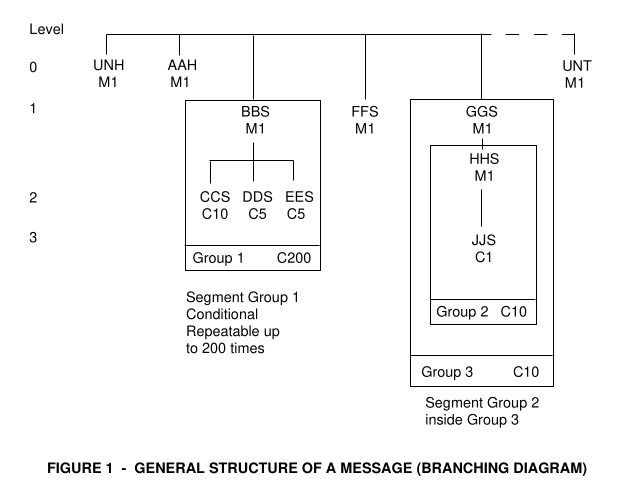
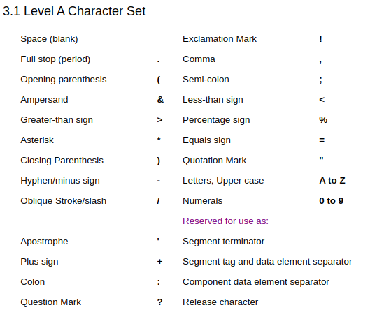
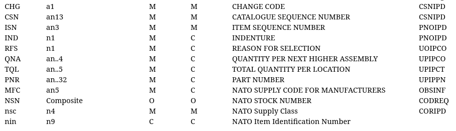
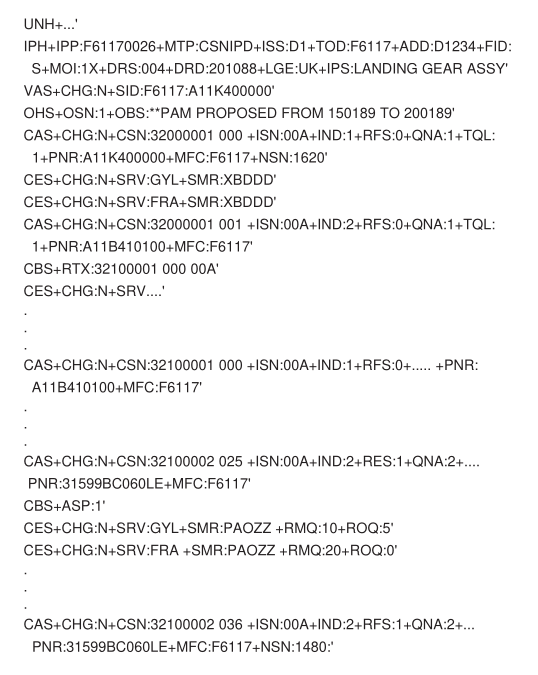
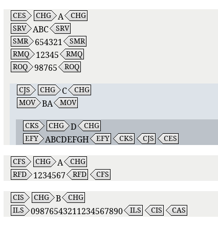

Adventures in Mainframes, Text-based Messaging, and iXML
ari.nordstrom@gmail.com
The S-Series and Exchanging Parts Information
Aerospace and Techpubs

Standards and SGML
Building and Maintaining Aerospace Equipment
Messaging and S2000M

Just customise the mainframe
Uh-Oh
A 30-Year Old Text Format...
S2000M
- First production issue was 2.1 in 1992
- The work started a decade earlier
Types of Messages
- Provisioning data
- Observations and customer-provided data
- Codification requests from a contractor
- Codification data to the contractor
All in all, 8 distinct types (plus one for error messages)
Think of it as a (complex) email thread
Structure
Segments
SEG+ABC:123+DEF:456'
SEG+ABC:123+DEF:456'
Data Units ("TEI")
ABC:123
ABC:12345:AB12:345
Data Typing
Data Typing
a3
ABC
Data Typing
an..5
A2B3C
, A
,
Data Typing
TEIs all have well-defined (and narrow) data typing
CSNIPD Structure
CSNIPD Segments
CSNIPD Example
...and 7 other message types
Inertia
Aerospace is a surprisingly conservative industry
- No parts means planes are grounded
- Grounding planes is ridiculously expensive
You need a motivator!
But:
- S2000M 2.1 is a contract
- Very little time
- No real off-the-shelf alternatives
Also, do we really want to implement a 30+ old standard now?
Is there anything else we can do?
S2000M 2.1 as an iXML grammar?
S2000M 2.1 as an iXML Grammar?
Given this made-up CSNIPD message...
UNH+123456+CD3456:EF1:FD3:C1:ABC123+1234567890ABCDEFGHIJ012345678912345+12:C'
IPH+IPP:F61170026+MTP:CSNIPD+ISS:D1+TOD:F6117+ADD:D1234+FID:S+MOI:1X+DRS:004+DRD:201088+LGE:UK+IPS:LANDING GEAR ASSY+DRR:AB123456'
VAS+CHG:N+SID:12345:X1234999999999999+SNS:1234:123456789'
OHS+OSN:1+OBS:TESTING THIS'
CAS+CHG:B+CSN:0123456789123+ISN:ABC+IND:9+RFS:0+QNA:123+TQL:ABCDE+PNR:01234567890+MFC:QWERT+NSN:1234:123456789'
CBS+ASP:1+NIL:Q+RTX:1234567890123456+SMF:X+MFM:THIS IS TEXT+DFL:THIS IS MORE TEXT'
CCS+UCE:ABCDEFGH+UCA:123456+ICY:AB'
CDS+CTL:1234567+ESC:9+MAP:12+CSR:321'
CES+CHG:A+SRV:ABC+SMR:654321+RMQ:12345+ROQ:98765'
CJS+CHG:C+MOV:BA'
CKS+CHG:D+EFY:ABCDEFGH'
CFS+CHG:A+RFD:1234567'
CIS+CHG:B+ILS:09876543211234567890'
PAS+CHG:F+PNR:123456789123456789123456789+MFC:EDCBA+DFP:THIS IS A DFP TEXT+INC:12345+NSN:1234:123456789+RNC:7+RNV:5+RNJ:3'
PBS+UOI:AB+SPQ:0123+TOP:QW+ITY:ER+SPC:0+PLT:12+STR:9+SLC:X+PLC:Y+PCD:W'
PCS+UOM:AB+QUI:1234'
PDS+UPR:123456789012+CUR:ABC+MSQ:54321+PBD:1:2:3000:4:5:11111111'
PES+CRT:123+SRA:21+MTI:123456:AB+TBI:123456:CD+TSI:654321:BD+ALI:987654:XY+TLF:123'
PFS+DMC:ABC123+HAZ:ED12+PIC:8+FTC:X+PSC:Q+ESD:0+CMK:9'
PGS+SUU:AB345678901234+SPU:CD345678901234+WUU:AB34567+WPU:CD34567'
UNT+123456+ABCD1234567812'
S2000M 2.1 as an iXML Grammar?
...and this iXML grammar
{
This is an iXML grammar for S2000M CSNIPD messages.
S2000M spec 2.1: https://www.s2000m.org/S2000M/S2000M%20Issue%202.1%20CP1-4.pdf
iXML information: https://invisiblexml.org/
Grammar tested with https://johnlumley.github.io/jwiXML.xhtml
}
CSNIPD = UNH, IPH, VAS+, OHS*, CAS+, PAS*, UNT .
@segend = -"'", (#9 | #a0 | #a | #d)* .
-sep = -"+" .
-comp-sep = -":" .
-alpha = [L] .
-num = [N] .
-other-level-a = [" !.,(;&<>%*=)"; #22] .
-an = (alpha | num | other-level-a) .
-num4 = num, num, num, num .
-num9 = num, num, num, num, num, num, num, num, num .
-num0-2 = (num? | num, num) .
-num0-3 = (...) .
-num0-4 = (...) .
-num0-5 = (...) .
-num0-6 = (...) .
-num0-12 = (...) .
-an2 = an, an .
-an3 = an, an, an .
-an4 = (...) .
-an5 = (...) .
-an6 = (...) .
-an7 = (...) .
-an8 = (...) .
-an9 = (...) .
-an13 = (...) .
-an14 = (...) .
-an0-2 = (an? | an, an) .
-an0-3 = (...) .
-an0-4 = (...) .
-an0-5 = (...) .
-an0-6 = (...) .
-an0-7 = (...) .
-an0-8 = (...) .
-an0-14 = (...) .
-an0-16 = (...) .
-an0-19 = (...) .
-an0-20 = (...) .
-an0-32 = (...) .
-an0-35 = (...) .
no-segments-0074 = num0-6 .
msg-no-0062 = an0-14 .
msg-type-0065 = an0-6 .
msg-version-nbr-0052 = an0-3 .
msg-rel-nbr-0054 = an0-3 .
ctrl-agency-0051 = an0-2 .
assoc-assign-code-0057 = an0-6 .
message-identifier-S009 = msg-type-0065, comp-sep, msg-version-nbr-0052, comp-sep, msg-rel-nbr-0054, comp-sep, ctrl-agency-0051, comp-sep, assoc-assign-code-0057? .
common-access-ref-0068 = an0-35 .
sequence-transfers-0070 = num0-2 .
first-last-transfer-0073 = alpha . {C or F - should it be checked here?}
transfer-status-S010 = sequence-transfers-0070, comp-sep, first-last-transfer-0073 .
UNH = -"UNH", sep, msg-no-0062, sep, message-identifier-S009, sep, common-access-ref-0068, sep, transfer-status-S010, segend .
UNT = -"UNT", sep, no-segments-0074, sep, msg-no-0062, segend .
IPP = -"IPP", comp-sep, an9 .
MTP = -"MTP", comp-sep, an0-6 .
ISS = -"ISS", comp-sep, an, an .
TOD = -"TOD", comp-sep, an5 .
ADD = -"ADD", comp-sep, an5 .
FID = -"FID", comp-sep, alpha .
MOI = -"MOI", comp-sep, an, an .
DRS = -"DRS", comp-sep, num, num, num .
DRD = -"DRD", comp-sep, num, num, num, num, num, num .
LGE = -"LGE", comp-sep, alpha, alpha .
IPS = -"IPS", comp-sep, an0-19 .
DRR = "DRR", comp-sep, an8 .
IPH = -"IPH", sep, IPP, sep, MTP, (sep, ISS)?, sep, TOD, sep, ADD, sep, FID, sep, MOI, sep, DRS, sep, DRD, sep, LGE, sep, IPS, (sep, DRR)?, segend .
CHG = -"CHG", comp-sep, alpha .
mfc = an5 .
pnr = an0-32 .
SID = -"SID", comp-sep, mfc, comp-sep, pnr .
nsc = num4 .
nin = num9 .
SNS = -"SNS", (comp-sep, nsc)?, (comp-sep, nin)? .
VAS = -"VAS", sep, CHG, sep, SID, (sep, SNS)?, segend .
OSN = -"OSN", comp-sep, num .
OBS = -"OBS", comp-sep, an* . {This is 0-130 chars}
OHS = -"OHS", sep, OSN, sep, OBS, segend .
CSN = -"CSN", comp-sep, an13 .
ISN = -"ISN", comp-sep, an3 .
IND = -"IND", comp-sep, num .
RFS = -"RFS", comp-sep, num .
QNA = -"QNA", comp-sep, an0-4 .
TQL = -"TQL", comp-sep, an0-5 .
PNR = -"PNR", comp-sep, -pnr .
MFC = -"MFC", comp-sep, -mfc .
NSN = -"NSN", comp-sep, nsc, (comp-sep, nin)? .
CAS = -"CAS", sep, CHG, sep, CSN, sep, ISN, (sep, IND)?, (sep, RFS)?, (sep, QNA)?, (sep, TQL)?, (sep, PNR)?, (sep, MFC)?, (sep, NSN)?, segend, (CBS?, CCS?, CDS?, CES, CFS?, CIS?)? .
ASP = -"ASP", comp-sep, num .
NIL = -"NIL", comp-sep, an .
RTX = -"RTX", comp-sep, an0-16 .
SMF = -"SMF", comp-sep, alpha .
MFM = -"MFM", comp-sep, an* {0-40 alphanumeric chars} .
DFL = -"DFL", comp-sep, an* {0-130 alphanumeric chars} .
CBS = -"CBS", (sep, ASP)?, (sep, NIL)?, (sep, RTX)?, (sep, SMF)?, (sep, MFM)?, (sep, DFL)?, segend .
UCE = -"UCE", comp-sep, an8 .
UCA = -"UCA", comp-sep, an6 .
ICY = -"ICY", comp-sep, an, an .
CCS = -"CCS", (sep, UCE)?, (sep, UCA)?, (sep, ICY)?, segend .
CTL = -"CTL", comp-sep, an7 .
ESC = -"ESC", comp-sep, num .
MAP = -"MAP", comp-sep, num0-2 .
CSR = -"CSR", comp-sep, num0-3 .
CDS = -"CDS", (sep, CTL)?, (sep, ESC)?, (sep, MAP)?, (sep, CSR)?, segend .
SRV = -"SRV", comp-sep, an0-3 .
SMR = -"SMR", comp-sep, an0-6 .
RMQ = -"RMQ", comp-sep, num0-5 .
ROQ = -"ROQ", comp-sep, num0-5 .
CES = -"CES", sep, CHG, sep, SRV, (sep, SMR)?, (sep, RMQ)?, (sep, ROQ)?, segend, CJS* .
RFD = -"RFD", comp-sep, an0-7 .
CFS = -"CFS", sep, CHG, sep, RFD, segend .
ILS = -"ILS", comp-sep, an0-20 .
CIS = -"CIS", sep, CHG, sep, ILS, segend .
MOV = -"MOV", comp-sep, an0-2 .
CJS = -"CJS", sep, CHG, sep, MOV, segend, CKS* .
EFY = -"EFY", comp-sep, an0-8 .
CKS = -"CKS", sep, CHG, sep, EFY, segend .
DFP = -"DFP", comp-sep, an* {0-130 alphanumeric} .
INC = -"INC", comp-sep, an5 .
RNC = -"RNC", comp-sep, an .
RNV = -"RNV", comp-sep, num .
RNJ = -"RNJ", comp-sep, num .
PAS = -"PAS", sep, CHG, sep, PNR, sep, MFC, (sep, DFP)?, (sep, INC)?, (sep, NSN)?, (sep, RNC)?, (sep, RNV)?, (sep, RNJ)?, segend, (PBS?, PCS?, PDS?, PES?, PFS?, PGS?)? .
UOI = -"UOI", comp-sep, alpha, alpha .
SPQ = -"SPQ", comp-sep, num0-4 .
TOP = -"TOP", comp-sep, an2 .
ITY = -"ITY", comp-sep, an2 .
SPC = -"SPC", comp-sep, num .
PLT = -"PLT", comp-sep, num0-2 .
STR = -"STR", comp-sep, num .
SLC = -"SLC", comp-sep, an .
PLC = -"PLC", comp-sep, an .
PCD = -"PCD", comp-sep, an0-2 .
PBS = -"PBS", (sep, UOI)?, (sep, SPQ)?, (sep, TOP)?, (sep, ITY)?, (sep, SPC)?, (sep, PLT)?, (sep, STR)?, (sep, SLC)?, (sep, PLC)?, (sep, PCD)?, segend .
UOM = -"UOM", comp-sep, an2 .
QUI = -"QUI", comp-sep, num0-4 .
PCS = -"PCS", (sep, UOM)?, (sep, QUI)?, segend .
UPR = -"UPR", comp-sep, num0-12 .
CUR = -"CUR", comp-sep, alpha, alpha, alpha .
MSQ = -"MSQ", comp-sep, num0-5 .
qty = num0-5 .
upr = num0-12 .
PBD = -"PBD", comp-sep, qty, comp-sep, qty, comp-sep, upr, (comp-sep, qty, comp-sep, qty, comp-sep, upr)* {0-2 repetitions} .
PDS = -"PDS", (sep, UPR)?, (sep, CUR)?, (sep, MSQ)?, (sep, PBD)?, segend .
CRT = -"CRT", comp-sep, num0-3 .
SRA = -"SRA", comp-sep, num0-2 .
-alpha0-2 = (alpha? | alpha, alpha) .
tbf = num0-6 .
tcm = alpha0-2 .
MTI = -"MTI", (comp-sep, tbf)?, (comp-sep, tcm)? .
tbo = num0-6 .
tco = alpha0-2 .
TBI = -"TBI", (comp-sep, tbo)?, (comp-sep, tco)? .
tsv = num0-6 .
tcs = alpha0-2 .
TSI = -"TSI", (comp-sep, tsv)?, (comp-sep, tcs)? .
aul = num0-6 .
tca = alpha0-2 .
ALI = -"ALI", (comp-sep, aul)?, (comp-sep, tca)? .
TLF = -"TLF", comp-sep, num0-3 .
PES = -"PES", (sep, CRT)?, (sep, SRA)?, (sep, MTI)?, (sep, TBI)?, (sep, TSI)?, (sep, ALI)?, (sep, TLF)?, segend .
DMC = -"DMC", comp-sep, an0-6 .
HAZ = -"HAZ", comp-sep, an4 .
PIC = -"PIC", comp-sep, num .
FTC = -"FTC", comp-sep, an .
PSC = -"PSC", comp-sep, an .
ESD = -"ESD", comp-sep, num .
CMK = -"CMK", comp-sep, num .
PFS = -"PFS", (sep, DMC)?, (sep, HAZ)?, (sep, PIC)?, (sep, FTC)?, (sep, PSC)?, (sep, ESD)?, (sep, CMK)?, segend .
SUU = -"SUU", comp-sep, an14 .
SPU = -"SPU", comp-sep, an14 .
WUU = -"WUU", comp-sep, an7 .
WPU = -"WPU", comp-sep, an7 .
PGS = -"PGS", (sep, SUU)?, (sep, SPU)?, (sep, WUU)?, (sep, WPU)?, segend .
S2000M 2.1 as an iXML Grammar?
We get this XML serialisation
<CSNIPD>
<UNH segend=" ">
<msg-no-0062>123456</msg-no-0062>
<message-identifier-S009>
<msg-type-0065>CD3456</msg-type-0065>
<msg-version-nbr-0052>EF1</msg-version-nbr-0052>
<msg-rel-nbr-0054>FD3</msg-rel-nbr-0054>
<ctrl-agency-0051>C1</ctrl-agency-0051>
<assoc-assign-code-0057>ABC123</assoc-assign-code-0057>
</message-identifier-S009>
<common-access-ref-0068>1234567890ABCDEFGHIJ012345678912345</common-access-ref-0068>
<transfer-status-S010>
<sequence-transfers-0070>12</sequence-transfers-0070>
<first-last-transfer-0073>C</first-last-transfer-0073>
</transfer-status-S010>
</UNH>
<IPH segend=" ">
<IPP>F61170026</IPP>
<MTP>CSNIPD</MTP>
<ISS>D1</ISS>
<TOD>F6117</TOD>
<ADD>D1234</ADD>
<FID>S</FID>
<MOI>1X</MOI>
<DRS>004</DRS>
<DRD>201088</DRD>
<LGE>UK</LGE>
<IPS>LANDING GEAR ASSY</IPS>
<DRR>DRRAB123456</DRR>
</IPH>
<VAS segend=" ">
<CHG>N</CHG>
<SID>
<mfc>12345</mfc>
<pnr>X1234999999999999</pnr>
</SID>
<SNS>
<nsc>1234</nsc>
<nin>123456789</nin>
</SNS>
</VAS>
<OHS segend=" ">
<OSN>1</OSN>
<OBS>TESTING THIS</OBS>
</OHS>
<CAS segend=" ">
<CHG>B</CHG>
<CSN>0123456789123</CSN>
<ISN>ABC</ISN>
<IND>9</IND>
<RFS>0</RFS>
<QNA>123</QNA>
<TQL>ABCDE</TQL>
<PNR>01234567890</PNR>
<MFC>QWERT</MFC>
<NSN>
<nsc>1234</nsc>
<nin>123456789</nin>
</NSN>
<CBS segend=" ">
<ASP>1</ASP>
<NIL>Q</NIL>
<RTX>1234567890123456</RTX>
<SMF>X</SMF>
<MFM>THIS IS TEXT</MFM>
<DFL>THIS IS MORE TEXT</DFL>
</CBS>
<CCS segend=" ">
<UCE>ABCDEFGH</UCE>
<UCA>123456</UCA>
<ICY>AB</ICY>
</CCS>
<CDS segend=" ">
<CTL>1234567</CTL>
<ESC>9</ESC>
<MAP>12</MAP>
<CSR>321</CSR>
</CDS>
<CES segend=" ">
<CHG>A</CHG>
<SRV>ABC</SRV>
<SMR>654321</SMR>
<RMQ>12345</RMQ>
<ROQ>98765</ROQ>
<CJS segend=" ">
<CHG>C</CHG>
<MOV>BA</MOV>
<CKS segend=" ">
<CHG>D</CHG>
<EFY>ABCDEFGH</EFY>
</CKS>
</CJS>
</CES>
<CFS segend=" ">
<CHG>A</CHG>
<RFD>1234567</RFD>
</CFS>
<CIS segend=" ">
<CHG>B</CHG>
<ILS>09876543211234567890</ILS>
</CIS>
</CAS>
<PAS segend=" ">
<CHG>F</CHG>
<PNR>123456789123456789123456789</PNR>
<MFC>EDCBA</MFC>
<DFP>THIS IS A DFP TEXT</DFP>
<INC>12345</INC>
<NSN>
<nsc>1234</nsc>
<nin>123456789</nin>
</NSN>
<RNC>7</RNC>
<RNV>5</RNV>
<RNJ>3</RNJ>
<PBS segend=" ">
<UOI>AB</UOI>
<SPQ>0123</SPQ>
<TOP>QW</TOP>
<ITY>ER</ITY>
<SPC>0</SPC>
<PLT>12</PLT>
<STR>9</STR>
<SLC>X</SLC>
<PLC>Y</PLC>
<PCD>W</PCD>
</PBS>
<PCS segend=" ">
<UOM>AB</UOM>
<QUI>1234</QUI>
</PCS>
<PDS segend=" ">
<UPR>123456789012</UPR>
<CUR>ABC</CUR>
<MSQ>54321</MSQ>
<PBD>
<qty>1</qty>
<qty>2</qty>
<upr>3000</upr>
<qty>4</qty>
<qty>5</qty>
<upr>11111111</upr>
</PBD>
</PDS>
<PES segend=" ">
<CRT>123</CRT>
<SRA>21</SRA>
<MTI>
<tbf>123456</tbf>
<tcm>AB</tcm>
</MTI>
<TBI>
<tbo>123456</tbo>
<tco>CD</tco>
</TBI>
<TSI>
<tsv>654321</tsv>
<tcs>BD</tcs>
</TSI>
<ALI>
<aul>987654</aul>
<tca>XY</tca>
</ALI>
<TLF>123</TLF>
</PES>
<PFS segend=" ">
<DMC>ABC123</DMC>
<HAZ>ED12</HAZ>
<PIC>8</PIC>
<FTC>X</FTC>
<PSC>Q</PSC>
<ESD>0</ESD>
<CMK>9</CMK>
</PFS>
<PGS segend=" ">
<SUU>AB345678901234</SUU>
<SPU>CD345678901234</SPU>
<WUU>AB34567</WUU>
<WPU>CD34567</WPU>
</PGS>
</PAS>
<UNT segend="">
<no-segments-0074>123456</no-segments-0074>
<msg-no-0062>ABCD1234567812</msg-no-0062>
</UNT>
</CSNIPD>
A Note About Data Types
n0-3 = (n? | n, n | n, n, n ) .
an0-130 = (an? | an, an | an, an, an | ...) .
This gets tedious very quickly
Now That I've Got the XML...
...wouldn't it be nice to author S2000M messages in it?
Validation
- Schema (DTD)
- Schematron rules
Generating a DTD
<!ELEMENT IPP (#PCDATA)>
<!ATTLIST IPP
xmlns CDATA #FIXED ''>
<!ELEMENT MTP (#PCDATA)>
<!ATTLIST MTP
xmlns CDATA #FIXED ''>
<!ELEMENT ISS (#PCDATA)>
<!ATTLIST ISS
xmlns CDATA #FIXED ''>
<!ELEMENT TOD (#PCDATA)>
<!ATTLIST TOD
xmlns CDATA #FIXED ''>
<!ELEMENT ADD (#PCDATA)>
<!ATTLIST ADD
xmlns CDATA #FIXED ''>
<!ELEMENT FID (#PCDATA)>
<!ATTLIST FID
xmlns CDATA #FIXED ''>
<!ELEMENT MOI (#PCDATA)>
<!ATTLIST MOI
xmlns CDATA #FIXED ''>
<!ELEMENT DRS (#PCDATA)>
<!ATTLIST DRS
xmlns CDATA #FIXED ''>
<!ELEMENT DRD (#PCDATA)>
<!ATTLIST DRD
xmlns CDATA #FIXED ''>
Additions to the DTD
<!ELEMENT CBS (ASP?,NIL?,RTX?,SMF?,MFM?,DFL?)>
<!ATTLIST CBS
level CDATA #FIXED "2"
segend CDATA #REQUIRED>
Schematron
There are some obvious wins
UNH = -"UNH", sep, msg-no-0062, ... segend .
...
UNT = -"UNT", sep, ... msg-no-0062, segend .
<UNH segend=" ">
<msg-no-0062>123456</msg-no-0062>
...
</UNH>
...
<UNT segend="">
...
<msg-no-0062>ABCD1234567812</msg-no-0062>
</UNT>
Schematron
Data typing is a lot easier in Schematron
an..20
-an0-20 = (an? | an, an | ...) .
<sch:rule context="CIS/ILS">
<sch:assert test="string-length(text()) <=20">The data type for ILS in segment CIS is 'an..20' but the actual number of characters is <sch:value-of select="string-length(text())"/>.</sch:assert>
</sch:rule>
<sch:rule context="CIS/ILS">
<sch:assert test="matches(text(), '^([A-Z]|[0-9]|[ !\.,(;&<>%*=),"-/])+$')">The data type for ILS in segment CIS is 'an..20' but the actual characters used are <sch:value-of select="."/>.</sch:assert>
</sch:rule>
These are generated from a spreadsheet provided by the working group
(etc)
Authoring
In oXygen or similar, it's a matter of adding a framework
But really, a form-based approach (XForms!) is better
Publishing
Essentially a roundtrip
<xsl:stylesheet
xmlns:xsl="http://www.w3.org/1999/XSL/Transform"
xmlns:xs="http://www.w3.org/2001/XMLSchema"
xmlns:math="http://www.w3.org/2005/xpath-functions/math"
exclude-result-prefixes="xs math"
version="3.0">
<!-- Converts S2MXML to S2000M 2.1 message format -->
<xsl:output method="text" indent="0"/>
<xsl:template match="/">
<xsl:apply-templates select="*"/>
</xsl:template>
<!-- The message type is special and should only pass through -->
<xsl:template
match="CSNIPD"
priority="10">
<xsl:apply-templates select="*"/>
</xsl:template>
<!-- Segments always have @segend; we don't want to process headers or trailers here -->
<xsl:template match="*[@segend and not(self::UNH) and not(self::UNT)]">
<xsl:value-of select="name(.) || '+'"/>
<xsl:for-each select="*[not(@segend)]">
<xsl:choose>
<!-- Composite elements -->
<xsl:when test="*">
<xsl:value-of select="name(.) || '+'"/>
<xsl:for-each select="*">
<xsl:value-of select="text()"/>
<xsl:if test="following-sibling::*">
<xsl:value-of select="':'"/>
</xsl:if>
</xsl:for-each>
</xsl:when>
<!-- Regular key/value data units -->
<xsl:otherwise>
<xsl:value-of select="name(.) || ':' || normalize-space(text()[1])"/>
</xsl:otherwise>
</xsl:choose>
<!-- Separator if more data units follow (child segments should be excluded) -->
<xsl:if test="following-sibling::*[not(@segend)]">
<xsl:value-of select="'+'"/>
</xsl:if>
</xsl:for-each>
<!-- Segment end -->
<xsl:text>'
</xsl:text>
<!-- Child segments -->
<xsl:apply-templates select="*[@segend]"/>
</xsl:template>
<!-- Message headers and trailers -->
<xsl:template match="UNH | UNT">
<xsl:value-of select="name(.) || '+'"/>
<xsl:apply-templates select="*" mode="UN"/>
<xsl:text>'
</xsl:text>
</xsl:template>
<!-- Header and trailer syntax differs from message body -->
<xsl:template match="*" mode="UN">
<xsl:choose>
<xsl:when test="*">
<xsl:for-each select="*">
<xsl:value-of select="text()"/>
<xsl:if test="following-sibling::*">
<xsl:value-of select="':'"/>
</xsl:if>
</xsl:for-each>
</xsl:when>
<xsl:otherwise>
<xsl:value-of select="normalize-space(text())"/>
</xsl:otherwise>
</xsl:choose>
<xsl:if test="following-sibling::*">
<xsl:value-of select="'+'"/>
</xsl:if>
</xsl:template>
<xsl:template match="text()">
<xsl:value-of select="normalize-space(.)"/>
</xsl:template>
</xsl:stylesheet>
Context
In Closing
Current State
- Proof of concept done (and works!)
- Several message types remain
- BOM-related development ongoing
- Other publishing formats (reviews)
The Future
- S2000M 7.1/8.0 - 2.1 was always a temporary measure
- The entire S-series
Thanks to...
- John Lumley and his awesome jωiXML processor
- Steven Pemberton
- The entire iXML community
- Mike Day, one of UK's foremost S2000M experts